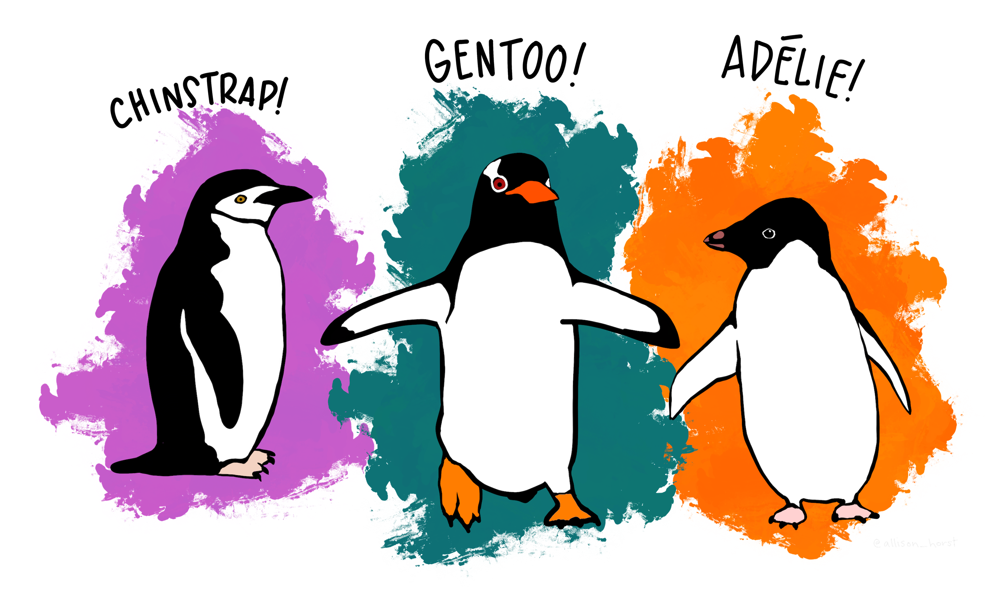
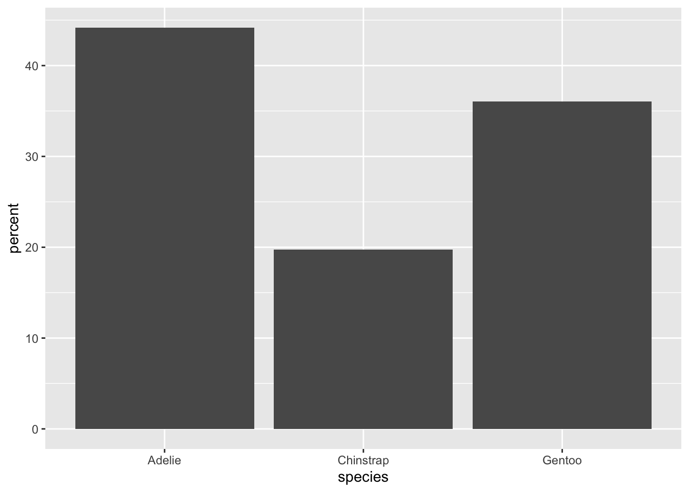
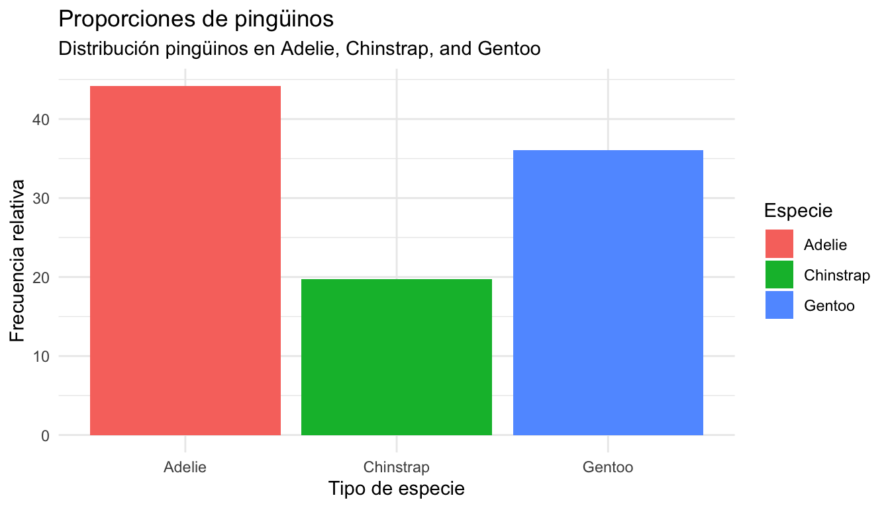
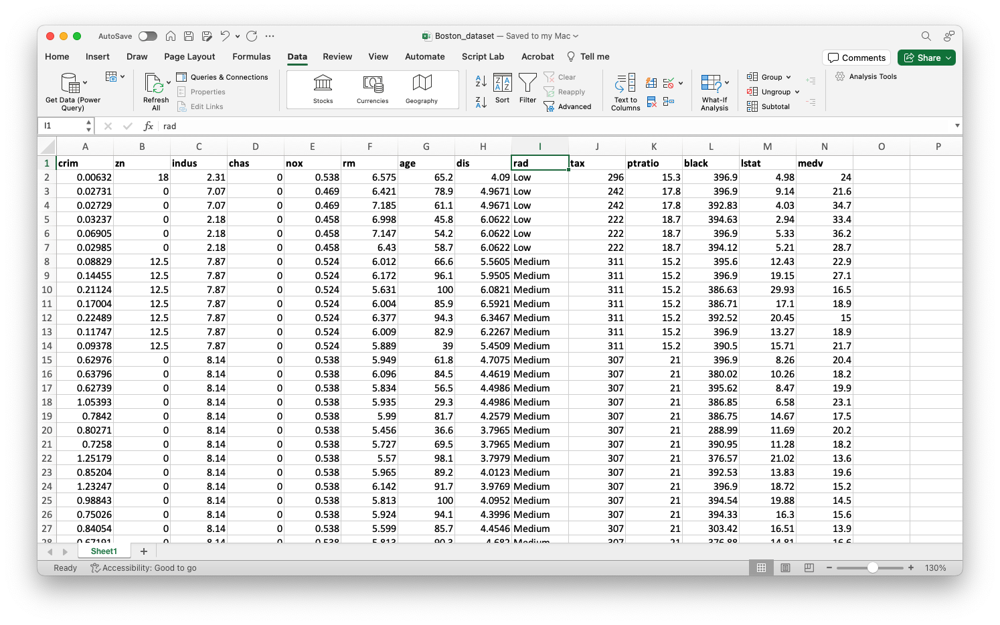
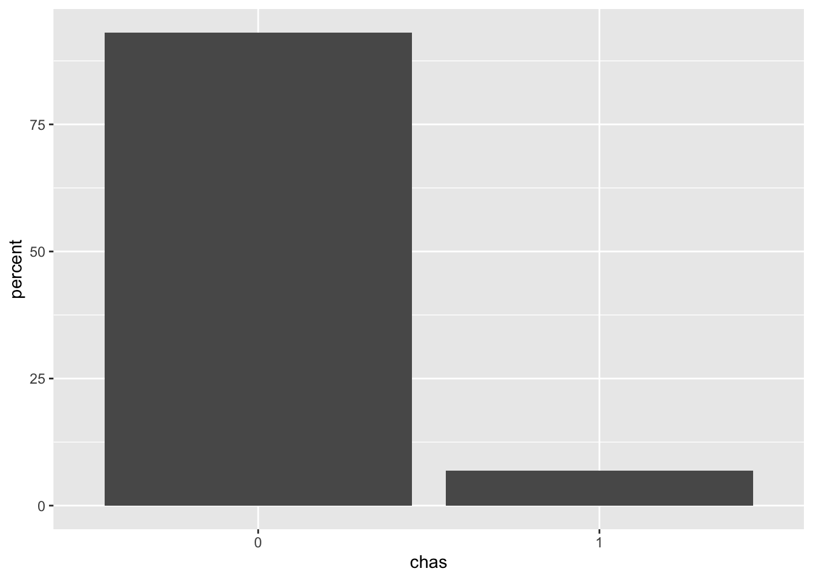
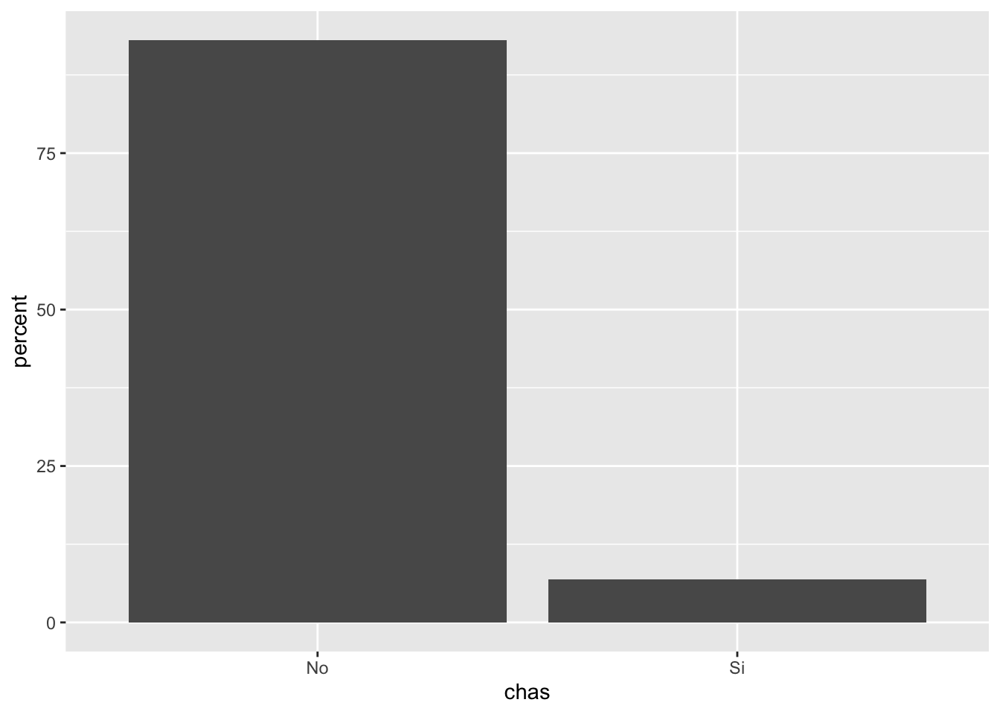
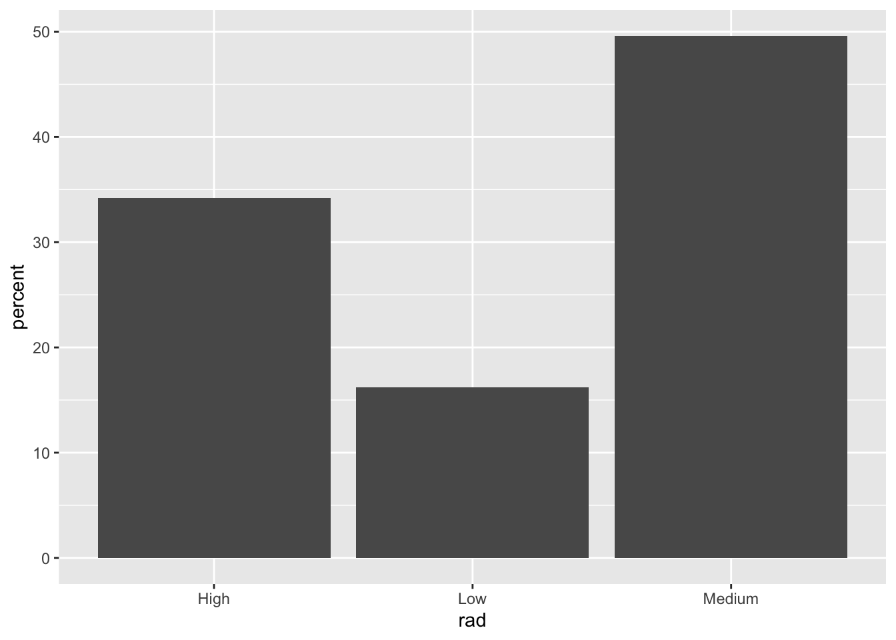
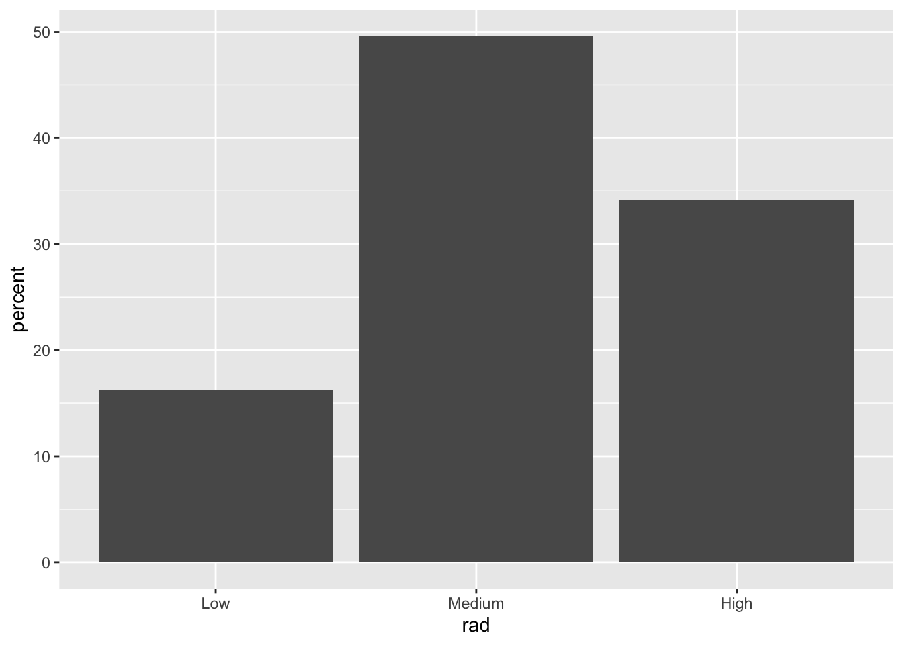
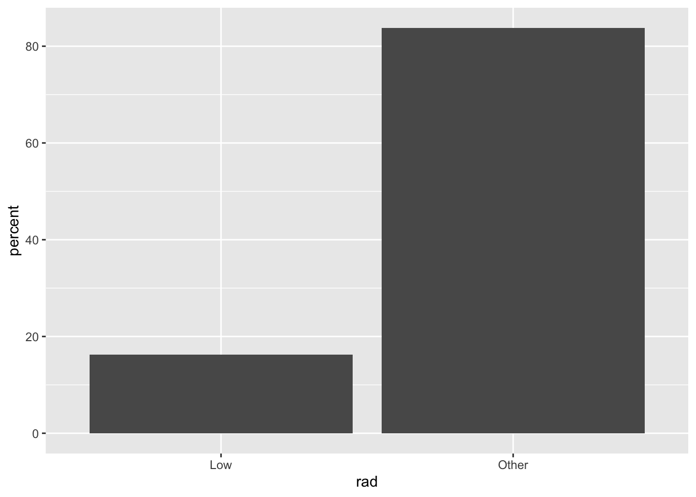

# Nos se te olvide instalar la librería "ggformula" en Google Colab.
# install.packages(ggformula)
library(readxl)
library(ggplot2)
library(ggformula)
library(dplyr)Variables Categóricas
IN2039: Visualización de Datos
Agenda
Enfocarnos en 1 variable categórica.
Introducción
Resúmenes estadísticos
Gráfica de barras
Gráfica circular y Actividad
Transformando variables categóricas
Primero lo primero
Hoy usaremos R para construir gráficas y tablas. Para esto, usaremos las librerías que ya vimos antes como readxl, ggplot2, ggformula, y dplyr.
Carguémoslas en R antes de comenzar.
Penguins Dataset
Ilustraremos los conceptos de hoy usando el conjunto de datos penguins.xlsx.
Súbelo a Google Colab y cárgalo en R usando el siguiente código.
penguins_data = read_excel("penguins.xlsx")
En Google Colab, el archivo debe de estar en la carpeta llamada “content” o “contenido.”
Hoy nos enfocaremos en visualizar las variables categóricas: species, island y sex.
penguins_data %>%
select(species, island, sex) %>%
head()# A tibble: 6 × 3
species island sex
<chr> <chr> <chr>
1 Adelie Torgersen male
2 Adelie Torgersen female
3 Adelie Torgersen female
4 Adelie Torgersen <NA>
5 Adelie Torgersen female
6 Adelie Torgersen male Asegúrate que R sabe que la variable es categórica
A pesar de que la variables species, island y sex son claramente categóricas, R no reconoce esto.
Por default, R determina que esas variables son carácter o chr porque están compuestas por texto.
En R, las variables categóricas se conocen como
factorofct.
Definiendo variables categóricas en R
Para asegurarnos que R sepa que la variable es categórica o fct, usamos la función mutate_at() de dplyr:
penguins_data = penguins_data %>%
mutate_at(c("species", "island", "sex"), as.factor)Nota que acabamos de reemplazar el objeto penguins_data con su nueva versión.
Ahora, las etiquetas de las variables son fct.
penguins_data %>%
select(species, island, sex) %>%
head()# A tibble: 6 × 3
species island sex
<fct> <fct> <fct>
1 Adelie Torgersen male
2 Adelie Torgersen female
3 Adelie Torgersen female
4 Adelie Torgersen <NA>
5 Adelie Torgersen female
6 Adelie Torgersen male Resúmenes Estadísticos
Resúmenes Estadísticos
Un resumen estadístico nos ayuda a resumir un conjunto de observaciones de una manera simple.
. . .
Los resúmenes estadísticos más utilizados para datos categóricos son:
La frecuencia de una categoría es el número de observaciones que pertenecen a esa categoría.
La frecuencia relativa es la frecuencia dividida por el número total de observaciones.
Tabla de Frecuencia
Resume una variable categórica contando los valores por categoría.
| Especie | Frecuencia |
|---|---|
| Adelie | 152 |
| Chinstrap | 68 |
| Gentoo | 124 |
| Total | 344 |
Frecuencia: Número de observaciones en cada categoría.
Total: Suma total de observaciones.
Ventajas de las frequencias.
Resumen claro y conciso de los datos categóricos.
Facilita la identificación de patrones y tendencias.
Ayuda en la toma de decisiones informadas.
Tabla de frecuencia en R
Para construir una tabla de frecuencia en dplyr, usamos las funciones group_by(), summarise(), y n().
La función group_by() toma una tabla existente y la convierte en una tabla agrupada donde las operaciones se realizan “por grupo”.
La función n() cuenta los valores de una categoría.
penguins_data %>%
group_by(species) %>%
summarise("Frecuencia" = n())El código se lee:
Del objeto
penguins_data, agrupa los datos por la variablespecies, y resume los datos usando el número de elementos por categoría (n()).
penguins_data %>%
group_by(species) %>%
summarise("Frecuencia" = n())# A tibble: 3 × 2
species Frecuencia
<fct> <int>
1 Adelie 152
2 Chinstrap 68
3 Gentoo 124Tabla de Frecuencia Relativa
Resume una variable categórica calculando la proporción de valores por categoría.
| Especie | Frecuencia relativa |
|---|---|
| Adelie | 0.442 |
| Chinstrap | 0.198 |
| Gentoo | 0.360 |
| Suma | 1 |
penguins_data %>%
group_by(species) %>%
summarise("Frecuencia" = n()) %>%
mutate("Freq.Rel" =
Frecuencia/sum(Frecuencia))# A tibble: 3 × 3
species Frecuencia Freq.Rel
<fct> <int> <dbl>
1 Adelie 152 0.442
2 Chinstrap 68 0.198
3 Gentoo 124 0.360- Frecuencia relativa: Número de observaciones en cada categoría dividida por el total.
La ventaja de la frequencia relativa es que se puede interpretar como una probabilidad. Lo que da mas información.
Gráfica de barras
Gráfica de Barras
Representa visualmente una tabla de frecuencias o frecuencias relativas.
La frecuencia (o frecuencia relativa) se representa por una barra de altura proporcional.
. . .
Puedes construir una gráfica de barras usando la función gf_bar() así:
gf_bar( ~ species, data = penguins_data)
Si quieres graficar la frecuencia relativa, usa la función gf_percents.
gf_percents( ~ species, data = penguins_data)
Ejemplo: Mejorando la gráfica
Usando las herramientas para gráficos en ggplot, podemos mejorar el código anterior para que la gráfica se vea así.

Gráfica circular
Gráfica circular o de pastel
Se construye dividiendo un círculo en varias porciones que representan las categorías de la variable.
El diámetro del círculo comprendido por una categoría es su frecuencia relativa.
Permite dar un vistazo rápido a las proporciones de cada categoría.

Pie charts versus bar charts.
Bar charts can serve as a good way to show comparisons between categories. It is generally observed that new trends tend to shy away from using pie charts, as it is difficult for the human eye to judge the exact angle that shows the value of a category in a pie chart.
Actividad (solo mode)
Preguntale a ChatGPT
- Ve ChatGPT en https://chat.openai.com/
- Pidele a ChatGPT que te muestre como generar una gráfica de circular (o de pastel) usando ggplot2 y ggformula en R.
- Adapta tu código para producir una gráfica circular de la variable
islandenpenguin_data.
countdown::countdown(minutes = 20)20:00
Transformando variables categóricas
Aplica el Principio 3
Aplica los principios del diseño gráfico.
. . .
Podemos mejorar gráficas de variables categóricas usando estas técnicas:
Re-etiquetar las categorías para que sean más informativas.
Re-ordenar las categorías para que sigan su orden natural.
Colapsar categorías para simplificar la gráfica.
Ejemplo: Boston Housing Dataset
Este conjunto de datos contiene información recopilada por el Servicio del Censo de EE. UU. sobre viviendas en el área de Boston, Massachusetts.

Los datos están en Boston_dataset.xlsx. Súbelos a Google Colab y cárgalos en R usando el siguiente comando.
Boston_dataset = read_excel("Boston_dataset.xlsx")
Boston_dataset %>% head()# A tibble: 6 × 14
crim zn indus chas nox rm age dis rad tax ptratio black
<dbl> <dbl> <dbl> <dbl> <dbl> <dbl> <dbl> <dbl> <chr> <dbl> <dbl> <dbl>
1 0.00632 18 2.31 0 0.538 6.58 65.2 4.09 Low 296 15.3 397.
2 0.0273 0 7.07 0 0.469 6.42 78.9 4.97 Low 242 17.8 397.
3 0.0273 0 7.07 0 0.469 7.18 61.1 4.97 Low 242 17.8 393.
4 0.0324 0 2.18 0 0.458 7.00 45.8 6.06 Low 222 18.7 395.
5 0.0690 0 2.18 0 0.458 7.15 54.2 6.06 Low 222 18.7 397.
6 0.0298 0 2.18 0 0.458 6.43 58.7 6.06 Low 222 18.7 394.
# ℹ 2 more variables: lstat <dbl>, medv <dbl>Nos concentraremos en las siguientes variables:
chas: Si la casa limita con el río Charles (1: Si y 0: No)rad: Indice de accesibilidad a carreteras radiales (Low,Medium,High).
Recuerda…
Asegúrate de que R sabe que esas variables son categóricas.
Boston_dataset = Boston_dataset %>%
mutate_at(c("chas", "rad"), as.factor)
Boston_dataset %>% select(chas, rad) %>% head()# A tibble: 6 × 2
chas rad
<fct> <fct>
1 0 Low
2 0 Low
3 0 Low
4 0 Low
5 0 Low
6 0 Low Gráfica inicial
Vamos a construir una gráfica de barras de chas.
gf_percents( ~ chas, data = Boston_dataset)
Sin embargo, las categorías en la gráfica no son informativas.
Re-etiquetado categorías
Lo mejor es re-nombrar las categorías de la variable chas para que la gráfica de barras de mas información al usuario.
- Verifica los nombres de las categorías en la variable usando la función
unique().
Boston_dataset %>% select(chas) %>% unique()# A tibble: 2 × 1
chas
<fct>
1 0
2 1 - Re-emplaza por nombres apropiados usando las funciones
mutate()ycase_match().
Boston_dataset = Boston_dataset %>%
mutate(chas = case_match(chas, "0" ~ "No", "1" ~ "Si"))
Boston_dataset %>% select(crim, zn, indus, chas) %>% head()# A tibble: 6 × 4
crim zn indus chas
<dbl> <dbl> <dbl> <chr>
1 0.00632 18 2.31 No
2 0.0273 0 7.07 No
3 0.0273 0 7.07 No
4 0.0324 0 2.18 No
5 0.0690 0 2.18 No
6 0.0298 0 2.18 No Veamos que sucede ahora.
gf_percents( ~ chas, data = Boston_dataset)
Mucho mejor 😃
Re-ordenar categorías
Ahora, construyamos una gráfica de barras de rad.
gf_percents( ~ rad, data = Boston_dataset)
Las categorías no siguen un orden natural de izquierda a derecha: Low, Medium, y High.
Para tener el orden de las categorías deseado, debemos de ser más explícitos al definir la variable categórica en R.
Boston_dataset = Boston_dataset %>%
mutate(rad = factor(rad, levels = c("Low", "Medium", "High")))
gf_percents( ~ rad, data = Boston_dataset)
Mucho mejor 😃
Colapsando categorías
Algunas variables categóricas tienden a tener muchas categorías. Por ejemplo, los estados de un pais o códigos postales. En estos casos, puede ser difícil visualizar de todas las categórias en una sola gráfica.
Una estrategia para desarrollar una visualización efectiva es colapsar categorías.
Por ejemplo, en la variable rad, podemos collapsar las categorías Medium y High en una sola categoría llamada Other.
Para colapsar categorías en dplyr, usamos la función case_when() junto con mutate(). La función case_when() permite remplazar categorías usando expreciones lógicas en variables específicas.
Boston_dataset %>%
mutate(rad = case_when(rad != "Low" ~ "Other",
rad == "Low" ~ "Low")) %>%
head()# A tibble: 6 × 14
crim zn indus chas nox rm age dis rad tax ptratio black
<dbl> <dbl> <dbl> <chr> <dbl> <dbl> <dbl> <dbl> <chr> <dbl> <dbl> <dbl>
1 0.00632 18 2.31 No 0.538 6.58 65.2 4.09 Low 296 15.3 397.
2 0.0273 0 7.07 No 0.469 6.42 78.9 4.97 Low 242 17.8 397.
3 0.0273 0 7.07 No 0.469 7.18 61.1 4.97 Low 242 17.8 393.
4 0.0324 0 2.18 No 0.458 7.00 45.8 6.06 Low 222 18.7 395.
5 0.0690 0 2.18 No 0.458 7.15 54.2 6.06 Low 222 18.7 397.
6 0.0298 0 2.18 No 0.458 6.43 58.7 6.06 Low 222 18.7 394.
# ℹ 2 more variables: lstat <dbl>, medv <dbl>El colapsamiento de categorías simplifica nuestra gráfica.
Boston_dataset_simple = Boston_dataset %>%
mutate(rad = case_when(rad != "Low" ~ "Other",
rad == "Low" ~ "Low"))
gf_percents( ~ rad, data = Boston_dataset_simple)
También, nos permite enfatizar alguna categoría como Low y ver se compara con las otras categorías (como un todo).
Guardando gráficas en ggplot2
Para guardar una gráfica de ggplot2, primero guardamos la gráfica en un objeto de R.
mi_grafica_de_barras = gf_percents( ~ rad, data = Boston_dataset)Luego, usamos la función ggsave().
ggsave(filename = "Mi_grafica.jpg", plot = mi_grafica_de_barras,
width = NA, height = NA, units = "cm", dpi = 300)Saving 17.8 x 12.7 cm imageAlgunos de los argumentos arriba son:
width: ancho del gráfico.height: altura del gráfico.units: unidades de medición.dpi: resolución del gráfico.